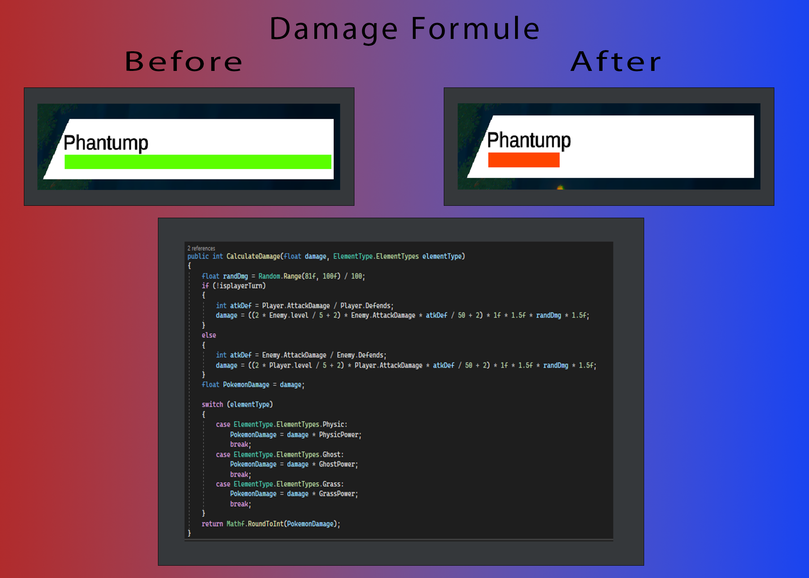
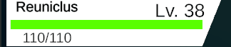
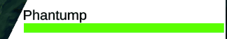
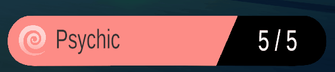
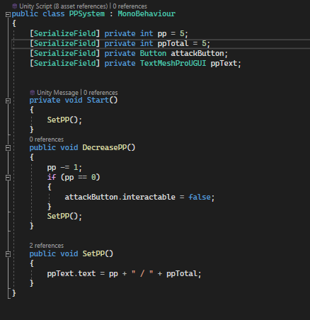

Vertical Slice
Pokemon Sword and Shield

Description
The main goal was to recreate a fragment of Pokemon Sword and Shield in the next 8 weeks
What is Vertical Slice?
The idea of this whole project is quite simple. Receate a this part of the actual game in your 8 week time period and try to make it 1 to 1
Example Gameplay video
ifrThis is the video we were given to try and remake. We were given some creativity and were allowed to change the Pokemon that were used. As long as they were in the actual game and the wild pokemon we fought was from that area.
Team
The team consisted of 4 Developers and 4 Artists.
My contribution
I was de Lead Developer for this project so my main focus besides programming features was making sure everything was being pulled to the right branch and if there were no errors. I majorly focussed on making giving and taking Damage as accurate as I could from the source..
Taking Damage
This is a Visual Sheet that tells you what that part of the script will do. This function will do a certain amount of damage based on the Players and Enemies stats. Below you can see the result in game.
 Power Points(PP) subtraction on UI after clicking
As seen above you can tell that when that button is press the count of 5 will go down. when says 0 the whole button will be deactivated. Below you'll see the Script that makes it happen.
Project Duration
The time given for this project was 8 weeks
Planning
We used a Trello board that you can find under this to make cards for each feature of the game that needed to be done.
It was fun working on this because I love the franchise below is where you can find the project
You can download the Demo on our github page.
GithubThe repositories to my contribution
TurnBased system and Damage PP System Game Manager